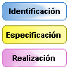
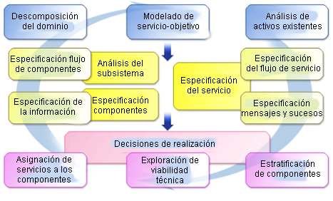
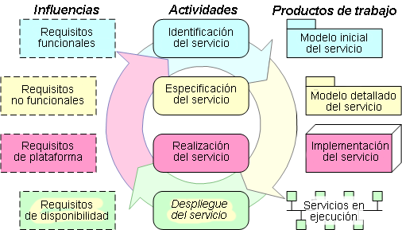
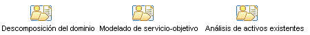
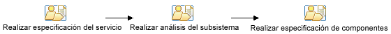
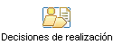
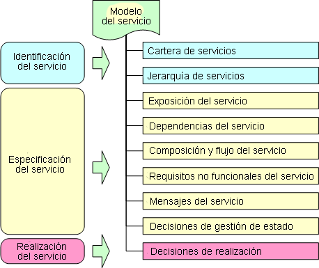

| Mapa: Transición desde IBM SOMA |
 |
|
Modelado orientado a servicios y arquitectura en IBMEl método SOMA se desarrolló como modelo de compromiso dentro del grupo de Servicios empresariales globales de IBM, y aunque se disponía públicamente de descripciones y artículos fue principalmente un método usado por los consultores y no disponible para clientes de IBM. Por otro lado, el RUP es un producto comercial ofrecido por IBM que los clientes utilizan para desarrollar sus propios procesos de desarrollo de software. Esta oferta de método integrado ha sido desarrollada por RUP/SOMA para aportar los aspectos únicos de SOMA al método comercial RUP y ponerlos a disposición de los clientes comerciales. En el área de diseño de soluciones SOA no resulta sorprendente encontrar muchos elementos similares aparecer en estos dos métodos, principalmente las siguientes tres áreas temáticas.  En apoyo de estas actividades SOMA definió un conjunto de técnicas y productos de trabajo, tal como aparece en la siguiente figura, para definir modelos de solución de extremo a extremo. Los siguientes elementos de método están codificados en color con elementos de identificación, especificación y, por último, de realización, de arriba a abajo. El RUP incluyó contenido de SOA en 2004 y 2005, lo que proporcionó a los clientes muchas técnicas similares y un conjunto de productos de trabajo integrados en la infraestructura de RUP existente. El método de SOA integradoAl reunir el contenido SOA de RUP y de SOMA, hemos juntado los métodos, técnicas y productos de trabajo según la siguiente infraestructura. Como puede observar las actividades centrales siguen siendo las mismas, los productos de trabajo también (en este nivel alto de detalle) y describimos aquí las influencias principales que guían las distintas actividades (aunque la mayoría de las actividades tienen en cuenta algún aspecto de la mayoría de estas influencias). Observe también que sigue siendo un método iterativo, que las actividades de identificación, especificación y realización a menudo suceden en varias, y a menudo solapadas, iteraciones centradas en distintos servicios o en servicios de distintos dominios.  El método actual no cubre el despliegue, el suministro y la gestión de servicios en esta ocasión. Fase: IdentificaciónTal como hemos dicho, el enfoque principal en la identificación de servicios es común en SOMA y RUP, aunque existían algunas diferencias y algunas de ellas han aparecido en el método integrado resultante. En la siguiente tabla se describe la forma en que las técnicas de SOMA se ejecutan en el RUP/SOMA integrado y dónde se pueden encontrar los temas en el contenido del método resultante. En la medida de lo posible se han conservado los nombres de SOMA, salvo en casos en los que el material de RUP tenía una procedencia más fuerte.
Produce una estructura de fases para identificación que se parece a lo siguiente:  También el contenido de método de RUP incluye los siguientes elementos que no tenían técnica correspondiente en SOMA.
Fase: EspecificaciónLa especificación de servicio se ha desarrollado de forma similar a la identificación, y se describe en la siguiente tabla.
Produce una estructura de fases para especificación que se parece a lo siguiente:  También el contenido de método de RUP incluye los siguientes elementos que no tenían técnica correspondiente en SOMA.
Fase: RealizaciónLa realización de servicio se ha desarrollado de forma similar a las dos actividades anteriores, y se describe en la siguiente tabla.
Produce una estructura de fases para realización que se parece a lo siguiente: El modelo de servicioEn SOMA el modelo de servicio se describe con la siguiente imagen; se trata de un único producto de trabajo, basado en documento, que incluye las distintas vistas técnicas y de ciclo de vida de los servicios identificados y especificados durante un proyecto. Las distintas secciones del modelo de servicio se muestran con mayor detalle en el apartado Artefacto: Modelo de servicio de RUP/SOMA.  El RUP Artefacto: Modelo de servicio se describe en formato documento y en formato UML (Plantilla: Modelo de servicio en Word y Plantilla: Modelo de servicio en UML) aunque es más probable que un proyecto utilice elementos de ambos formatos en la presentación de los resultados de su trabajo. |
© Copyright IBM Corp. 1987, 2006. Reservados todos los derechos. |